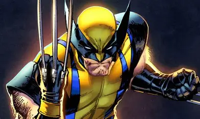

Wolverine

Um dos heróis mais implacáveis e amados do universo dos quadrinhos. Conheça a história, os segredos e as habilidades do mutante conhecido como Logan.
Ficha Técnica
Origem do Herói
Nascido no Canadá no final do século XIX, James Howlett descobriu seus poderes mutantes ainda na infância após um evento traumático. Durante anos, ele viveu sob o nome de Logan, vagando pelo mundo e lutando em diversas guerras devido à sua longevidade.
Seu destino mudou para sempre quando ele foi capturado pelo projeto militar secreto Arma X. Lá, cientistas revestiram todo o seu esqueleto com o metal indestrutível Adamantium, transformando-o em uma arma viva perfeita. Mais tarde, ele encontrou um propósito ao se juntar aos X-Men do Professor Charles Xavier.
Poderes & Habilidades
- Fator de Cura Acelerado: Capacidade de regenerar tecidos corporais, curar ferimentos em segundos e resistir a doenças ou venenos.
- Garras de Adamantium: Três garras retráteis em cada antebraço que cortam praticamente qualquer substância existente.
- Sentidos Aguçados: Visão, audição e olfato super-humanos, permitindo rastrear alvos a quilômetros de distância.
- Mestre em Combate: Décadas de experiência militar e treinamento em artes marciais ao redor do mundo.